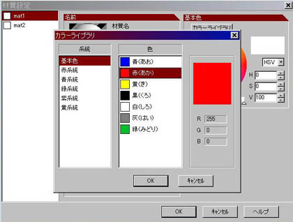
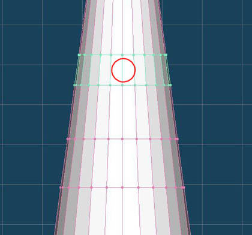
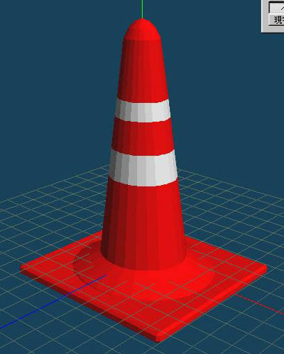

工程９
|  |
仕上げです、色の設定をしましょう。 「材質パレット」で「新規」ボタンを２回クリックして、２つの「材質｣を作りましょう。 |
工程１０
|  |
オブジェクトに材質を設定します。 「選択」→「ベルト」を選択します。左図の辺りをクリックすると、ベルト状に面が選択されます。 |
工程１１
|  |
「白」の方の材質を選択し「選択部処理」→「面に現在の材質を設定」を実行します。 次に「編集」メニュー→「すべての選択面を反転」を実行します。すると先ほど選択した部分以外が選択されるので、
「赤」の材質を選択し「選択部処理」→「面に現在の材質を設定」を実行します。 |